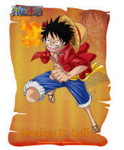

草帽”蒙奇·D·路飞（モンキーD·ルフィ/Monkey D. Luffy）
初次登场：漫画第1话
年龄：>17岁→19岁
>生日：：5月5日
血型：：F型
身高：：172cm→174cm
故乡：：东海·风车村
身份：：草帽一伙船长
喜欢的食物：：所有美食，首选是肉
讨厌的食物：：樱桃派
爱好：：喜欢探险，感兴趣于新奇怪异的事物
梦想：：找到ONE PIECE，并成为海贼王。
恶魔果实：：超人系橡胶果实
身世：：父亲是革命军首领蒙奇·D·龙，爷爷是海军中将英雄卡普。
悬赏：：3千万（可可亚西村事件）→1亿（阿拉巴斯坦事件）→3亿
（司法岛事件）→4亿（顶上战争）→5亿（德雷斯罗萨篇）→15亿（蛋糕岛事件）
由于他的标志性特征是一顶草帽，因此常被直接称呼为“草帽”。
梦想是找到传说中的ONE PIECE，成为海贼王。性格积极乐观，爱憎分明且十分重视伙伴，
对任何危险的事物都超感兴趣。看似白痴，却是一个大智若愚型的无愧船长之职的人。
和其他传统的海贼所不同的是，他并不会为了追求财富而无故杀戮，而是享受着身为海贼的冒险
